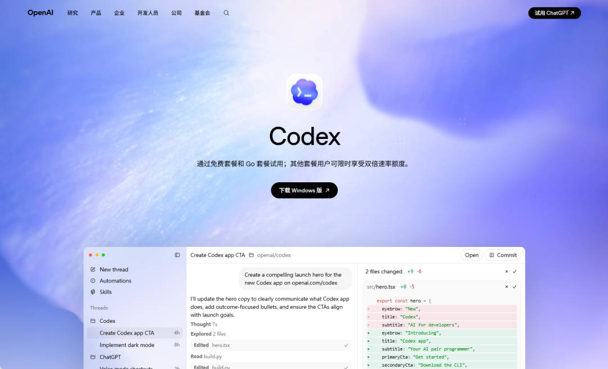

【温馨提示】：图文整理自互联网，旨在进行信息分享与学习交流，若涉及版权问题，请原作者随时通过后台联系我们，我们将第一时间删除。感谢理解！
Codex 发布已经有一段时间了，但很多开发者对它的认知还停留在"能帮写代码"这个层面。
为了解决这个问题，OpenAI 近日正式上线了 Codex Use Cases 官方案例库，一次性放出 12 个经过验证的实际工作流，覆盖数据、工程、前端、移动端、集成和评估六大类别。

每个案例都不是干巴巴的文档说明，而是带有专属输入提示词的完整工作流，用户可以直接在 Codex 中一键打开并代入使用。
以下是这 12 个官方案例的完整介绍。
1. Review pull requests faster — 加速 PR 审查
在人工审查之前，让 Codex 先过一遍代码变更，自动捕获回归问题和潜在隐患。不是替代人工 review，而是在人看之前先筛一轮，减少低级问题漏到人眼前的概率。对于每天要处理大量 PR 的团队来说，这个流程可以显著缩短审查周期。
2. Analyze datasets and ship reports — 数据分析与报告生成
把杂乱的原始数据丢给 Codex，它可以完成数据清洗、分析和可视化，最终输出一份结构清晰的报告。适合需要频繁处理数据但不想每次都从零写脚本的场景，尤其是那些非专职数据工程师但又经常跟数据打交道的角色。
3. Bring your app to ChatGPT — 将应用接入 ChatGPT
如果你有一个现成的产品或服务，Codex 可以帮你把核心功能封装成 ChatGPT 的专属应用，让用户在对话界面中直接使用你的服务。对于想要快速进入 ChatGPT 生态但没有太多开发资源的团队，这个案例提供了一条低成本的接入路径。
4. Build for iOS and macOS — 构建苹果平台应用
用 Codex 搭建、构建和调试 SwiftUI 应用。从项目脚手架搭建到具体的 UI 组件实现和 Bug 修复，覆盖 iOS 和 macOS 两个平台的开发需求。对于不太熟悉 Swift 生态的开发者来说，Codex 在这里充当了一个随时可用的平台专家角色。
5. Build responsivefront-end designs — 构建响应式前端
将截图和视觉参考图交给 Codex，它可以转化为响应式 UI 代码，并自带可视化检查环节来验证还原度。设计师给一张图，开发拿到能跑的代码，中间的翻译工作交给 Codex。这也是目前社区讨论热度最高的案例之一。
6. Create browser-based games — 创建浏览器游戏
定义一个游戏方案，Codex 负责在浏览器环境中构建和测试。从游戏逻辑到界面渲染，完整走通开发流程。适合快速原型验证和小型游戏项目，也是很多开发者拿来试手感的第一个案例。
7. Generate slide decks — 自动生成幻灯片
直接操作 pptx 文件格式，结合图像生成能力自动创建幻灯片。不是简单的文字填充模板，而是能处理排版、图片插入和内容组织的完整幻灯片制作流程。这个案例打破了"Codex 只能写代码"的认知边界。
8. Iterate on difficult problems — 迭代攻克高难度问题
将 Codex 作为一个带评分机制的改进循环来使用。每次迭代后自动评估结果质量，基于反馈继续优化，直到达到目标。适合那些一次性很难写对、需要反复调整的复杂任务，比如性能优化、算法调优等场景。
9. Kick off coding tasks from Slack — 从 Slack 发起编码任务
把 Slack 里的对话线程直接转化为有明确范围的云端编码任务。团队讨论完需求后，不用再手动整理成 ticket，直接在 Slack 中触发 Codex 开始干活。这个案例的价值在于打通了沟通工具和开发工具之间的断层。
10. Turn Figma designs into code — Figma 设计稿转代码
将 Figma 中选中的设计元素转化为可用的 UI 代码，利用结构化的设计上下文信息和可视化检查来确保代码与设计稿的一致性。这个能力解决的是设计到开发交付环节中最耗时的还原工作，和第 5 个案例形成互补。
11. Understand large codebases — 理解大型代码库
面对一个不熟悉的大型项目，Codex 可以帮你追踪请求流转路径、映射模块关系、快速定位目标文件。对于新加入项目的开发者，或者需要在复杂系统中排查问题的场景，这个能力直接缩短了从"完全不懂"到"能上手改代码"的时间。
12. Upgrade your API integration — 升级 API 集成
如果你的应用还在用旧版本的 OpenAI API，Codex 可以帮你完成模型和接口的升级迁移工作，确保代码适配最新版本。考虑到 OpenAI 的 API 迭代速度越来越快，这个案例的实用性会持续走高。
六大类别，覆盖完整开发链路
从 OpenAI 的分类来看，这 12 个案例横跨了六个维度：
数据：数据分析、报告生成、幻灯片制作
工程：代码库理解、高难度问题迭代、浏览器游戏开发
前端：响应式 UI 构建、Figma 转代码
移动端：iOS/macOS 应用开发
集成：ChatGPT 应用接入、Slack 任务触发、PR 审查
评估：API 升级迁移
同时服务于设计、工程、运维、产品和测试等不同角色，不再只是"工程师的工具"。
声明：本内容由AI辅助生成，可能包含不准确或推测性信息，请读者自行甄别并谨慎参考。